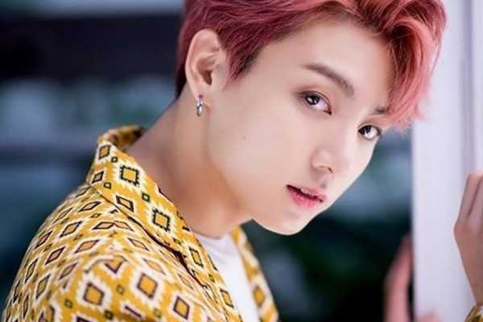
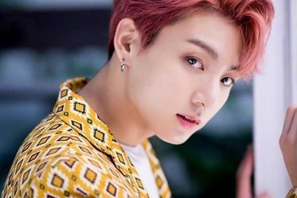

Jeon Jungkook (전정국) is also known under the name Jeon Jungkook (전 정국) or Golden Maknae (due to his unique number of talents). He was born in Busan, even though Jimin was born there first. He is the youngest member of the South Korean BTS group, also known as Bangtan Sonyeondan / Bulletproof Boy Scouts / Beyond The Scene). He is the main group singer, leading dancer, rapper, center, group face, and maknae. He always wanted to be singer and RM is the person who helped Jungkoook to face his fears and become a kpop Idol. He put effort and work into joining the south Korean boy group BTS. Jungkook was interviewed when he was 12 and trained with the group for 3 years until he made his debut on June 13, 2013 when he was 15, as a member of BTS.
-He is very cute !
-His Zodiac sign is Virgo.
-He is the youngest member of BTS.
-He is 21/22 years old (International/Korean ages, respectively)
-Jungkook's family consists of his mom, dad , and an older brother
.His name is Jeon Jung-Hyun.
-One of his common nicknames is Kookie.
-He attended Baek Yang Middle School.
-His favorite foods are anything with flour (pizza, pasta, etc) and
meat.
-His favorite colors are red, black (likes black the most), and
white.
-His favorite singers are IU, Justin Bieber, Troye Sivan, G Dragon and
Charlie Puth.
-His hobbies are drawing, filming, photography, playing games and
dancing.
 

-He has a habit of sniffing a lot because he has rhinitis. He wiggles
his fingers often as well.
-His shoe size is 7.5 (US conversion).
-His favorite number is 1.
-He loves to clap when he's excited.
-He likes shoes.
-He does not like tasteless things, insects, hurting himself, or
studying.
-He speaks Korean, Japanese, and basic English.
-He is non religious.
-In Grade 7, Jungkook learned B-boying at a club with friends and
hyungs.
-He has a black belt in Taekwondo.
-His favorite type of weather is sunny with a cool breeze.
-Jungkook's role model is G-Dragon of BigBang and RM .
-His dream when he was younger was to become a badminton player. In
his first year of high school, he listened to G-Dragon songs and
changed his dream to that of becoming a singer.
-His motto is, "I would rather be dead than to live without
passion."
-He likes to read comic books.
-Jimin says that Jungkook smiles when he swears.
-He has a dog named 구름 - Gureum (Cloud).
-He dislikes all school subjects except Physical Education, Art, and
Music.
-He generally doesn’t like bugs, but he likes cool bugs like (stag)
beetles. He used to have a stag beetle when he was younger, but it
died because he didn’t take care of it well.
-The other members say that Jungkook’s dorm room is the messiest, but
Jungkook denies this claim.
-Jungkook likes collecting Bluetooth speakers.
-He said he usually didn’t exercise much but started working out after
seeing the bodies of idols such as Taeyang and Jay Park.
-He is friends with GOT7's Bambam & Yugyeom, Seventeen's DK, Mingyu &
The8, and NCT's Jaehyun (aka the '97 line). Jungkook and Bambam
mentioned the '97 squad in their 'thanks' from their recent albums.
Jungkook, Bambam & Yugyeom (GOT7), The8, Mingyu, & DK (Seventeen), and
Jaehyun (NCT) are in a group conversation called "The Passengers of
1997."
-His ideal date is "walking along the beach at night."
-Things he wants to steal from other members: RM's knowledge, Suga's
diverse knowledge, J-Hope's positive spirit, Jimin's persistence and
effort, V's natural talent, and Jin's broad shoulders.
-Jungkook likes matching sets. He feels uneasy whenever his top and
pants are different. (Run BTS! -EP. 29)
-He has a driver's license.
-He can play games on two computers at once. (Knowing Brother - EP.
94)
-Thinks that V is the most similar to him, quote: “V Hyung. He’s
random, our comedic cords match well, and I think our personalities
are similar.”
-His favorite video game is Overwatch. (However, he's stated in a
Vlive that he doesn't play video games much anymore, rarely, if at
all. He wants to focus more on music and other activities and
interests.)
-He likes to do imitations/impersonations of his fellow band members,
particularly Jimin.
-He likes to tease Jimin about his height.
-He has said RM is a role model of his, mentioning on numerous
occasions how much RM continues to inspire him.
-In his earlier days, Jungkook would cry if he felt he didn't sing a
song correctly or well.
-He hates being called Oppa (an honorific meaning "older brother,"
used by women in reference to men who are older than them) by older
female fans. He's mentioned and joked before about checking ARMY fans'
ID to see if they are actually younger than him.
-He is a huge fan of IU; his ringtone is one of IU's songs.
-His favorite Avenger is Iron Man ... too bad he's dead.
-He participated in the song 'One Dream One Korea' along with many
other famous idols/singers back in 2015. This is a song of hope and
prayer that North Korea and South Korea can one day be unified and end
the long war between the two countries as well as longing for
peace.
-Jungkook is said to be one of the members who can cook very well. The
others being Jin and J-Hope. (Run BTS! EP.50)
-In the behind-the-scenes of the 'Euphoria' short film video, Jungkook
revealed he enjoys reading ARMYs' theories and likes to be on the look
out for them. Especially very intricate and detailed theories.
-Jungkook wants to go on a trip with his future lover someday.
-In a recent fansign, Jungkook revealed his pet dog, Gureum, no longer
recognizes him. This is possibly due to Jungkook rarely being at home
in Busan and not being able to see Gureum often.
-Jungkook has microvophobia (The fear of microwaves). He's confirmed
several times that he gets wary around them and avoids being near
and/or using them, out of fear that they will explode.
-During a press conference for Love Yourself 'Tear' promotions in
South Korea, it was confirmed that Jungkook is the next member who
will release a mixtape. He is the 4th member to do so, after RM (RM,
2015), Suga (Agust D, 2016), and J-Hope (Hope World, 2018).
-He produced and wrote Magic Shop, which is featured on the full
length album, Love Yourself 'Tear'. It's the second song he produced,
prior to Love Is Not Over, which was released on The Most Beautiful
Moment in Life, Part 1, and The Most Beautiful Moment in Life: Young
Forever.
-Jungkook often refers to Jimin as 'Jimin-ssi' rather than 'Hyung'.
-Jungkook revealed that he wants to get a tattoo.
-The things Jungkook loves about himself the most is his passion and
his thighs.
-He has two solo songs, “Begin” (Wings), and “Euphoria” (Love
Yourself: Wonder).
-Jungkook's nickname, 'Golden Maknae', was given to him by RM.
-When Jungkook gets nervous he will fidget frequently. He also tends
to bite his lip often.
-Jungkook is good at drawing like his older brother.
-Jungkook, along with Jin, Jimin, and V were voted as one of the Asian
Heartthrobs of 2018, earning him a spot at #31.
-During the World Tour for Love Yourself, Jungkook injured his foot
and couldn't perform for 7 concert days. He had to get stitches in his
heel.
-Jungkook stated in a Vlive that he doesn't like to eat late at night,
as doing so will give him heartburn and an upset stomach the following
morning. (180906, 181016 Vlive)
-Jungkook is shy and introverted.
-Jungkook was voted as one of the 100 most sexiest men in the world.
Earning him a spot at #1.
-Jungkook's voice deepens whenever he speaks in Satoori (Busan
Dialect/Accent).
-He ranked #2 on " 100 most handsome faces of 2018"